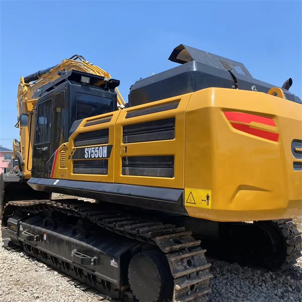

Refurbished SANY SY550 Excavator
The SANY SY550 Excavator is a robust and powerful machine designed for large-scale construction, mining, and earthmoving projects. Known for its outstanding performance, durability, and advanced technology, the SY550 is built to handle heavy workloads while offering superior fuel efficiency and ease of operation. Whether you're working on major construction sites, demolition projects, or large-scale landscaping tasks, the SY550 is equipped to tackle the most demanding conditions.
Honestly, it's almost impossible to buy a brand new excavator from China. They either don't exist or are made in China. If a Chinese seller tells you their Caterpillar/Komatsu/Volvo/Kobelco/Hitachi is brand new, they're lying. Therefore, a refurbished excavator is your best bet.

Opting for a refurbished SANY SY550 provides the same high performance as a new machine but at a more affordable price. The machine is thoroughly reconditioned to restore it to near-new condition, offering a cost-effective solution for contractors and businesses without compromising quality.
Here are the detailed specifications for a refurbished SANY SY550HD excavator:
Operating Weight and Dimensions
- Operating Weight: ~54,000 kg
- Transport Length: ~12.0 meters
- Transport Width: ~3.8 meters
- Transport Height: ~3.6 meters
- Tail Swing Radius: ~4.0 meters
- Track Width: ~600–800 mm standard
- Undercarriage: Heavy-duty, reinforced for mining applications
Engine and Powertrain
- Engine Model: Isuzu 6WG1 (imported, customized by SANY)
- Rated Power Output: 310 kW (415 hp) @ 1,800 rpm
- Displacement: 15.68 liters
- Fuel Tank Capacity: ~650–700 liters
- Travel Speed: ~5.0 km/h
- Swing Speed: ~9.0 rpm
- Emission Control: DOC + DPF + SCR with electric urea heating
Hydraulic System
- Main Pump Type: Electronically controlled axial piston pumps
- Pump Displacement: Increased from 212 cc to 240 cc
- System Pressure: Up to 34.3 MPa
- Hydraulic Oil Capacity: ~550 liters
- Efficiency Features:
- 36-diameter valve core for reduced pressure loss
- Regeneration circuits
- Load-sensing flow distribution
Performance Metrics
- Bucket Capacity:
- Standard: 3.2 m³
- Optional: 3.8 m³ super-large bucket
- Bucket Design: Wear-resistant blade plate structure
- Max Digging Depth: ~7.5–8.0 meters
- Max Reach (Horizontal): ~12.0–12.5 meters
- Max Dump Height: ~7.5–8.0 meters
- Bucket Digging Force: ~300 kN
- Arm Digging Force: ~230 kN
Cab and Operator Features
- Cab Type: C12 cab with reinforced structure
- Display: Intelligent LCD monitor with diagnostics
- Controls: Pilot-operated joysticks with auxiliary hydraulic circuit
- Comfort: Air-suspension seat, HVAC, noise insulation
- Visibility: Wide glass area, LED work lights, optional camera system
Attachments Compatibility
- Standard Bucket: 3.2 m³
- Optional Tools: Rock breaker, demolition shear, ripper, compactor
- Quick Coupler: Heavy-duty hydraulic coupler
- Bucket Series: Configurable for gravel, granite, and mining conditions (“one bucket for one condition”)
Refurbishment Scope
Refurbished SY550 units typically include:
- Engine Overhaul: Turbocharger, injectors, cooling system
- Hydraulic Restoration: Pump recalibration, valve block testing, hose replacement
- Electrical Diagnostics: Monitor, sensors, wiring harness
- Cab Reconditioning: Seat, joysticks, HVAC, repainting
- Structural Repairs: Boom/bucket welding, bushing replacement, undercarriage rebuild
Overview of the SANY SY550 Excavator
The SANY SY550 is a large hydraulic crawler excavator built for exceptional performance in the toughest environments. It is designed for applications such as excavation, trenching, material handling, and lifting, with a focus on stability, high power, and operator comfort. The SY550 combines the latest technology in hydraulics, electronics, and engine systems to deliver unparalleled performance and reliability.
Refurbished models go through a thorough inspection and reconditioning process where worn parts are replaced with genuine SANY components. This ensures that the machine operates at peak performance and provides extended service life, making it an excellent investment for businesses looking to maximize value without the cost of a new unit.
Key Specifications of the SANY SY550 Excavator
The SANY SY550 Excavator is designed to deliver heavy-duty performance in various demanding environments. Below are the key specifications that make this machine a top choice for large-scale operations:
-
Operating Weight: Approximately 55,000 kg (121,254 lbs)
-
Engine Power: 350 hp (261 kW)
-
Max Digging Depth: Up to 7.7 meters (25.3 feet)
-
Maximum Reach: 11.5 meters (37.7 feet)
-
Bucket Capacity: Typically 2.5 - 3.5 cubic meters (88 - 123 cubic feet)
-
Fuel Tank Capacity: Around 500 liters (132 gallons)
-
Travel Speed: Up to 5.5 km/h (3.4 mph)
These specifications give the SY550 the muscle and capability to handle large excavation tasks, whether it’s digging deep trenches or lifting heavy materials in challenging work conditions.
Performance and Efficiency of the SY550
The SY550 is engineered for exceptional productivity, durability, and fuel efficiency. Its powerful engine and advanced hydraulic system ensure that it operates smoothly even in the most demanding tasks, providing fast cycle times and high productivity.
Performance Highlights:
-
Powerful Hydraulic System: The SY550 features a highly efficient hydraulic system that provides smooth and precise control over the boom, arm, and bucket. This enables faster cycle times, reduced fuel consumption, and high lifting capacity, making it an excellent choice for large-scale excavation, trenching, and material handling.
-
Fuel Efficiency: The SY550 is designed with fuel efficiency in mind. The machine’s engine and hydraulics work in harmony to minimize fuel consumption without compromising power. This translates to lower operational costs and a reduced environmental footprint.
-
High Productivity: Equipped with a powerful engine and hydraulic system, the SY550 can complete demanding tasks quickly and efficiently. Whether digging, lifting, or moving materials, this excavator ensures that projects stay on track and meet deadlines.
-
Precision Control: The SY550 provides precise control, which is crucial when operating in sensitive or confined areas. Its advanced control system ensures that operators can perform detailed work, such as trenching or handling delicate materials, with confidence.
Durability and Longevity of the SY550
The SANY SY550 Excavator is built to withstand tough working conditions, ensuring a long lifespan with minimal maintenance. Designed with high-quality materials and components, the SY550 is engineered for reliable performance, even in the most demanding environments.
Durability Features:
-
Reinforced Undercarriage: The undercarriage of the SY550 is built to handle heavy workloads and rough terrain. The durable tracks, rollers, and sprockets ensure smooth operation, even in challenging ground conditions.
-
Long-Lasting Engine: Powered by a reliable engine, the SY550 is designed for long-term performance. With proper maintenance, the engine can provide thousands of hours of efficient operation, minimizing downtime and improving the overall return on investment.
-
Heavy-Duty Hydraulic System: The hydraulic components of the SY550 are designed to handle high pressures and demanding tasks, ensuring that the machine performs reliably throughout its lifespan.
Comfort and Safety of the SY550
The SANY SY550 Excavator prioritizes operator comfort and safety. With a spacious cabin, ergonomic controls, and advanced safety features, the SY550 offers a comfortable and safe working environment for operators, reducing fatigue during long shifts.
Comfort and Safety Features:
-
Spacious and Ergonomic Cabin: The cabin is designed to provide maximum comfort for operators. It features an adjustable seat, easy-to-use controls, and excellent visibility of the work area, which allows for better maneuverability and reduces operator fatigue.
-
Noise and Vibration Reduction: The SY550’s cabin is equipped with noise and vibration reduction technology, ensuring a quieter and more comfortable working environment. This feature is particularly beneficial for operators working in noisy or harsh environments for long hours.
-
Advanced Safety Features: The SY550 is equipped with Roll Over Protection (ROPS) and Falling Object Protection (FOPS) to ensure the safety of the operator in hazardous environments. The machine’s low center of gravity and robust structure enhance its stability, reducing the risk of tipping on uneven or sloped ground.
Versatility and Attachments for the SY550
The SANY SY550 is designed to be a versatile machine capable of handling a wide range of tasks. With a variety of attachments available, this excavator can be customized to meet the specific needs of different applications, such as digging, lifting, grading, or demolition.
Common Attachments for the SY550:
-
Buckets: The SY550 can be equipped with a variety of bucket types, including general-purpose, heavy-duty, and grading buckets. These buckets typically range from 2.5 to 3.5 cubic meters (88 - 123 cubic feet) and are ideal for large excavation and material handling tasks.
-
Hydraulic Breakers: For demolition tasks, the SY550 can be fitted with a hydraulic breaker, allowing it to break concrete, rock, and other tough materials with ease.
-
Augers: Auger attachments are perfect for drilling deep, narrow holes for foundations, posts, or other applications that require precision.
-
Grapples: Grapples can be used to lift and handle materials such as logs, scrap metal, and debris, improving efficiency on material handling tasks.
-
Quick Couplers: Quick couplers allow operators to easily switch between different attachments, minimizing downtime and improving overall productivity.
Benefits of Purchasing a Refurbished SANY SY550 Excavator
Buying a refurbished SANY SY550 Excavator offers a variety of advantages, especially for businesses that require high-performance machinery but are working within a budget.
Key Benefits:
-
Cost Savings: Refurbished SANY SY550 machines are significantly more affordable than new units, offering the same high performance at a lower price. This makes the machine a cost-effective solution for businesses and contractors.
-
Comprehensive Reconditioning: Refurbished models undergo a thorough inspection and reconditioning process, where all worn parts are replaced with genuine SANY components, ensuring the machine is restored to like-new condition.
-
Warranty: Many refurbished units come with a warranty, providing peace of mind in case of any unforeseen mechanical issues after purchase.
-
Sustainability: Purchasing refurbished equipment helps reduce waste and extend the lifespan of existing machinery, making it an environmentally friendly choice for businesses.
Maintenance Tips for the SANY SY550 Excavator
Proper maintenance is essential to ensure the SANY SY550 continues to perform at its best and lasts for many years. Below are some key maintenance tips:
Maintenance Recommendations:
-
Engine Maintenance: Regularly check and change the engine oil, replace air filters, and monitor coolant levels to ensure optimal engine performance and prevent overheating.
-
Hydraulic System: Inspect hydraulic hoses for leaks, replace hydraulic filters as necessary, and maintain the hydraulic fluid at the proper level to ensure smooth and efficient operation.
-
Undercarriage: Regularly inspect the undercarriage for wear, including tracks, sprockets, and rollers. Timely replacement of damaged components can prevent further damage and ensure smooth operation.
-
Attachments: Inspect and maintain attachments such as buckets and hydraulic breakers for wear and tear. Replace or repair damaged parts to maintain functionality and prevent downtime.
Conclusion
The SANY SY550 Excavator is a powerful and versatile machine designed for heavy-duty applications in large-scale construction, mining, and earthmoving projects. With its robust performance, fuel efficiency, and operator comfort, the SY550 is an excellent choice for businesses seeking high-quality, reliable equipment. Purchasing a refurbished SY550 offers significant cost savings while still providing excellent performance and long-term reliability. With the proper maintenance, the SANY SY550 can serve you for many years, making it a smart investment for any large-scale project.
Our Commitment
- 2 years / 4000 hours warranty.
- EPA certified.
- No sweatshop labor.
Contacts

- [email protected]
- Youtube Instagram Facebook
- Navigation: G206 (Sishu Bridge) in Changfeng County, Hefei City, Anhui Province, 200 meters north to the east